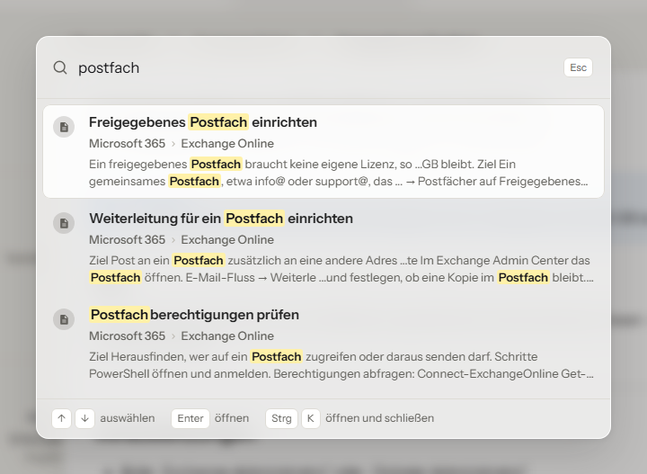

Mit der Schnellsuche findest du in wenigen Sekunden den Artikel, den du brauchst, von jeder Seite aus.
Drücke Strg + K (am Mac Cmd + K) und tippe ein Stichwort. Die Treffer erscheinen sofort, mit Pfad und Textausschnitt; dein Suchwort ist gelb markiert. Mit den Pfeiltasten wählst du einen Treffer aus, Enter öffnet ihn, Esc schließt die Suche.

Drückst du Enter, ohne einen Treffer auszuwählen, öffnet sich die ausführliche Suchseite mit allen Ergebnissen und Filtern.
| Eingabe | Findet |
|---|---|
vpn firewall | Artikel, die beide Wörter enthalten |
"freigegebenes postfach" | genau diese Wortfolge |
[Thema=Exchange] | Artikel mit diesem Schlagwort |
Die Suche zeigt nur, was du lesen darfst. Kundenthemen tauchen also nur auf, wenn du Zugriff darauf hast.